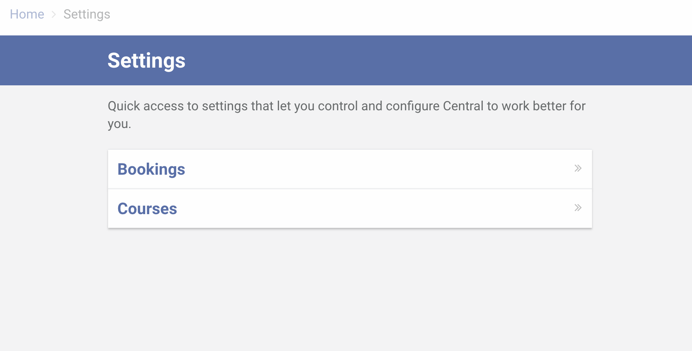

Configuring Bookings
-
Head over to the Settings page
You can find the Settings menu item at the bottom of the left sidebar. Click Bookings.
 -
The Bookings section allows you to add venues, rooms, room layouts and faculty roles.

-
Adding a venue
Before you can add rooms, you need to define venues and levels first. A venue can be likened to a building.
To add a venue, click Add venue
Enter the venue name and click Save.

-
Adding a level
Within a venue is a level. A level can be likened to a floor where rooms can be found.
To add a level in a venue, click Edit.
Enter the name of the level and click Add level.
You can add more levels by repeating the process.
Once you are done entering the levels, click Save.Note: The order in which the levels appear across the system can be changed by dragging and dropping them to your preferred order using the double-headed arrow icon besides each level.

-
Adding a room
A room is where you can attach a booking against.
To add a room, click Add room.
Enter the room name and select the level. Then click Save.